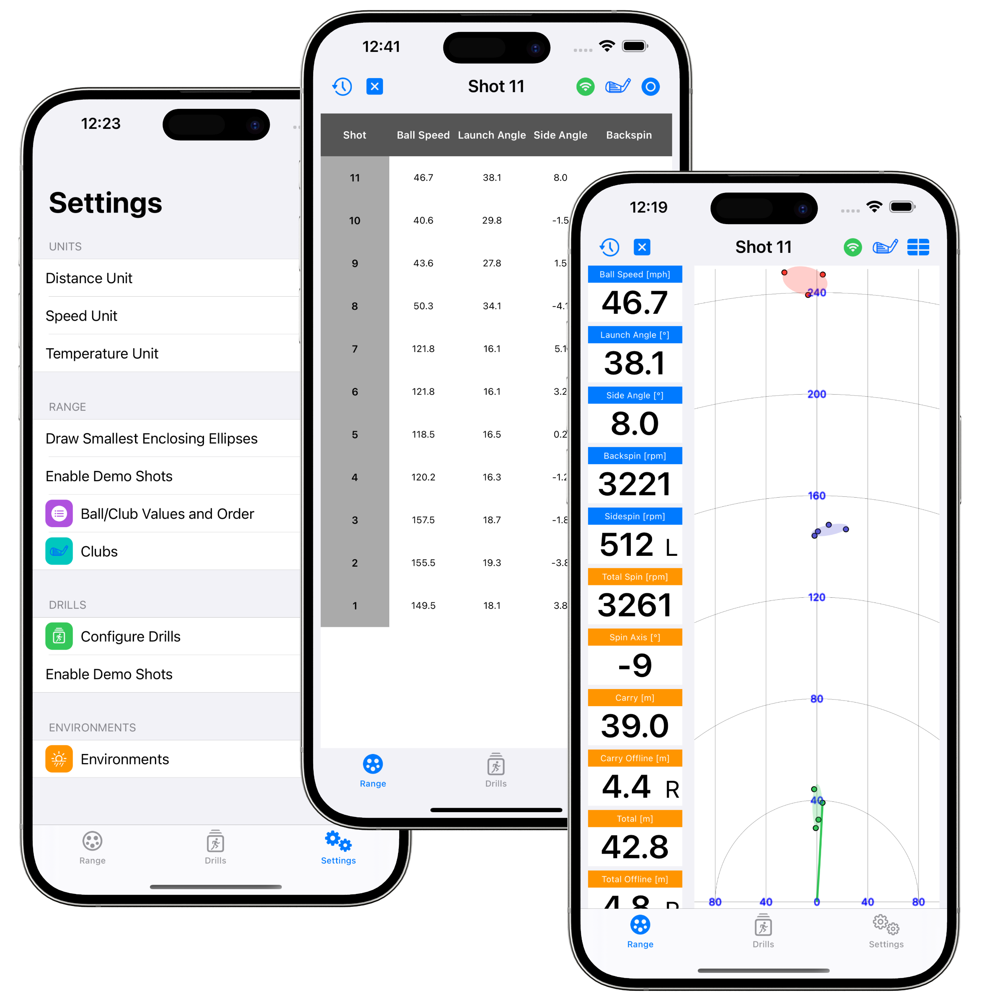
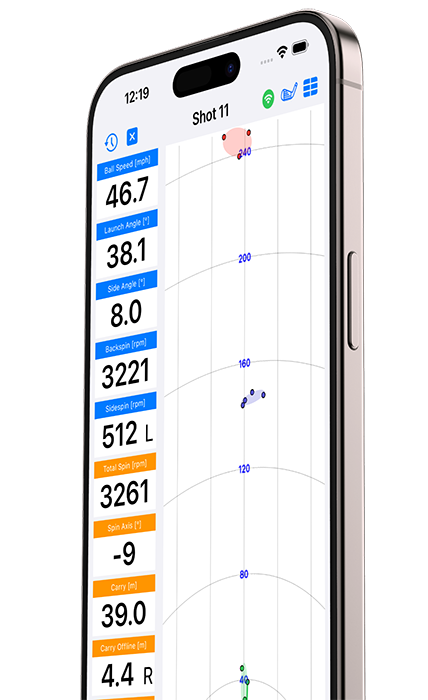
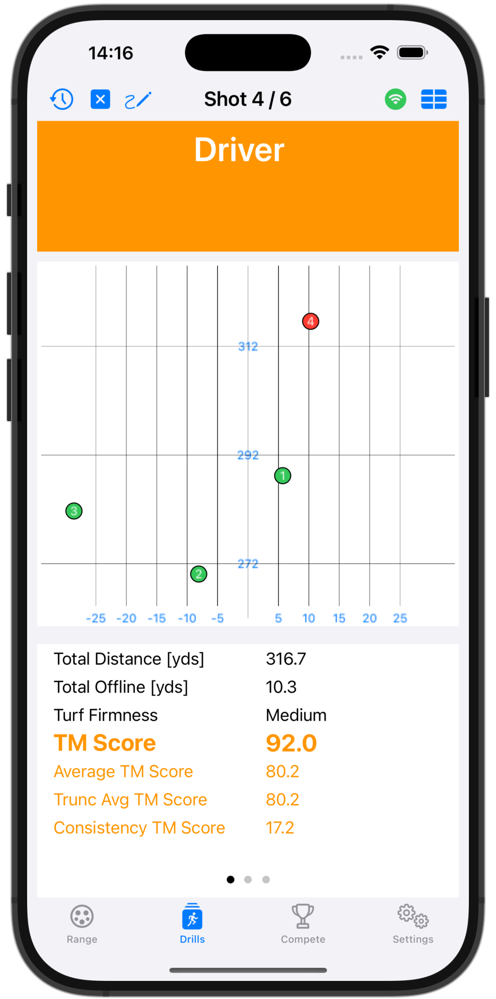
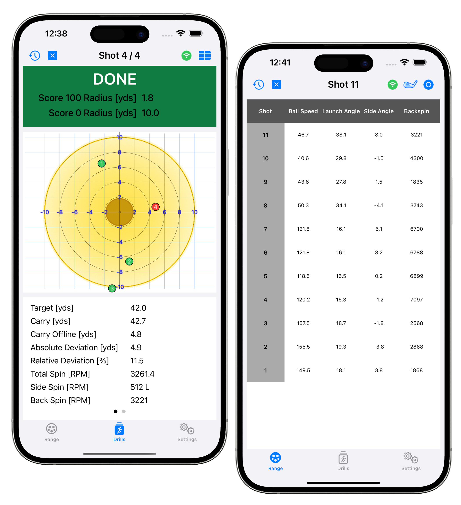
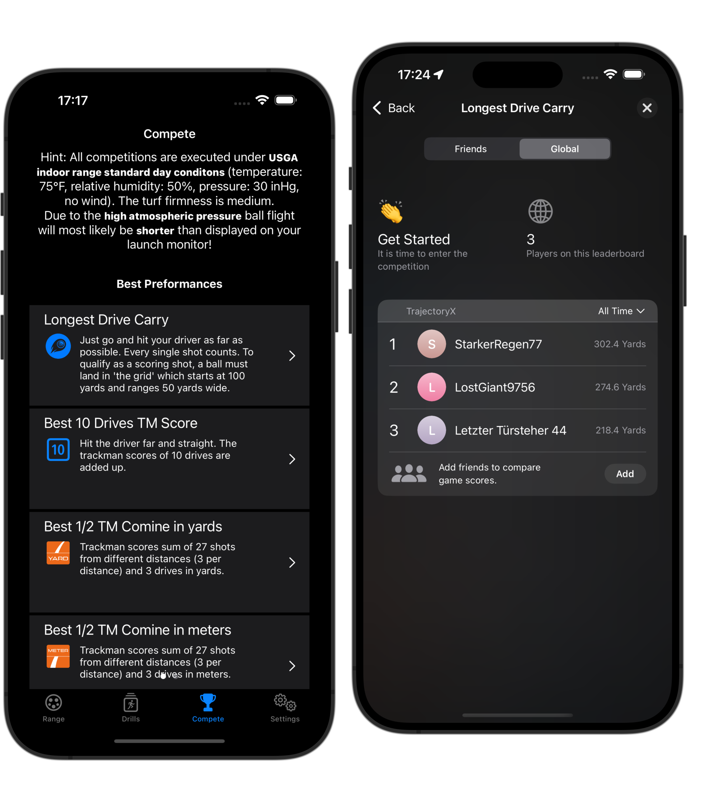

Range mode
Set up your environment — temperature, humidity, elevation, units — and see ball, club and trajectory data for every shot, with 2D carry and dispersion.


Practice range shots, Combine tests, driver, chip and pitch drills with your Foresight GCQuad/QuadMAX or Garmin R10 — plus multi-angle swing video and an AI Coach.

From the range to the wedge game to global competitions — all driven by your launch monitor's real ball and club data.
Set up your environment — temperature, humidity, elevation, units — and see ball, club and trajectory data for every shot, with 2D carry and dispersion.

Run TM Driver tests to benchmark your speed and accuracy, and make every improvement measurable over time.

Combine tests, spin drills and target-circle pitching to random or fixed distances — with shots-gained against the tour average.

Compete for the longest drive or the best 10-drive TM score — with friends or globally — and climb the Apple Game Center leaderboards.

TrajectoryX connects directly over Wi-Fi and turns raw ball and club measurements into a full training experience.
Native, encrypted connection. Full ball, club and spin data is read in real time and used to calculate and display the ball flight for every shot.
Connect your Garmin Approach R10 through the E6 Connect protocol and use the same range, drill and competition features — no extra hardware required.
Use several iPhones or iPads together: one device is the master showing the range, while two more act as camera slaves filming Down-the-Line and Face-On.
Instant, data-driven coaching on your practice. The AI Coach reads your shot data and turns it into clear, actionable feedback — right inside TrajectoryX.
An overall grade for your session, your strengths, what to improve and a targeted drill to work on next — all from a single tap.
Optional feedback after every shot: a compact banner with the key issue and a simple swing cue, so you can adjust on the spot.
Use your own API key with Claude, ChatGPT or Gemini — you choose the provider and model. Your key stays on your device.
The optional AI analysis sends your play data to the AI provider you chose (Claude / ChatGPT / Gemini); your API key is stored locally on your device. See our Privacy Policy for details.
Pick a predefined drill or build your own under Settings → Configure Drills. Choose from four drill types:
The classic Combine test. For every club except the driver you get a target and try to land your carry as close to it as possible — the closer you are, the higher the score. For the driver, hit as long (total distance) and as straight as possible.
On top of the Trackman score, the app shows the shots you gained (positive) or lost (negative) compared to the average PGA Tour player.
Produce stopping power. Each spin drill defines a landing corridor; land inside it and your score scales linearly with the total spin you generate per meter/yard. Hit the target spin and you score 100 — double it and you score 200.
Optionally penalize long coasting to reward true "stopping power", with configurable thresholds for negative scoring.
Great for pitch training. Two circles define a score of 100 (e.g. 2 yd) and 0 (e.g. 11 yd) around target distances. Between them the score is linear; inside the inner circle it keeps climbing above 100.
A progression variant of the target-circle drill. Land in the circle and advance to the next distance; miss and you choose what happens — retry, drop back, or restart. The goal: finish all distances in as few shots as possible.
Download TrajectoryX for iPhone and iPad and connect your launch monitor in minutes.
Track your practice time — see exactly where it goes across 12 categories, from driver and putting to swing speed.